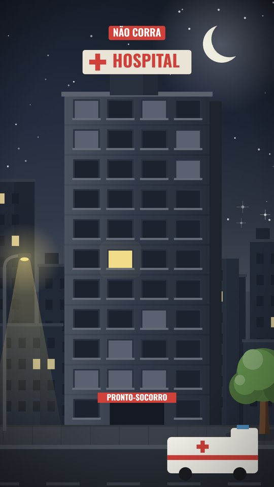
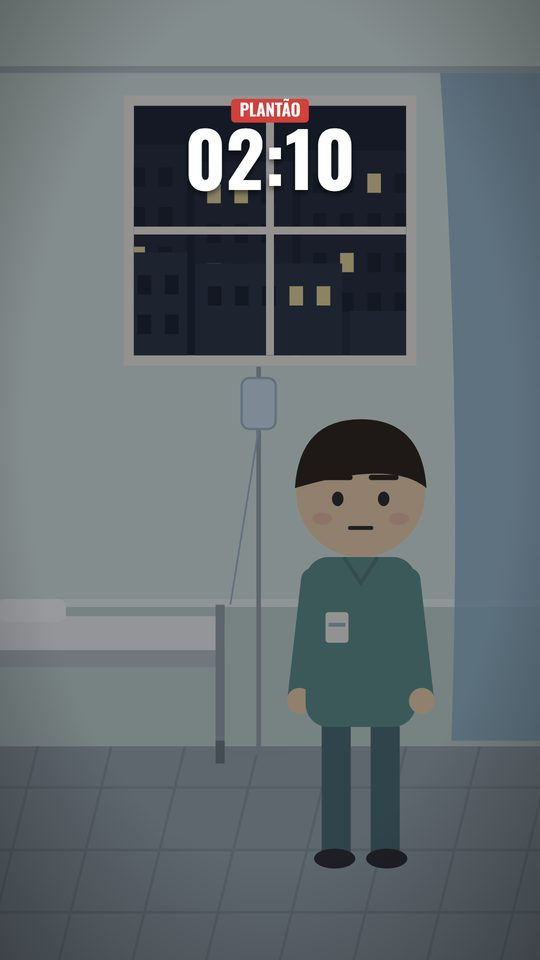
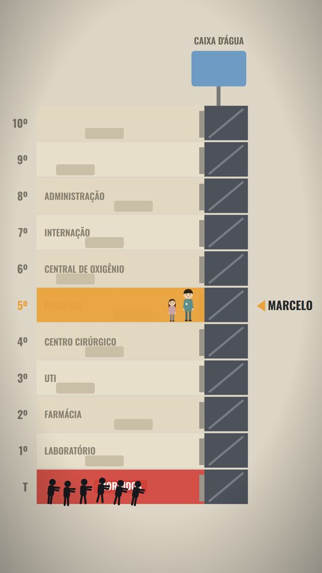
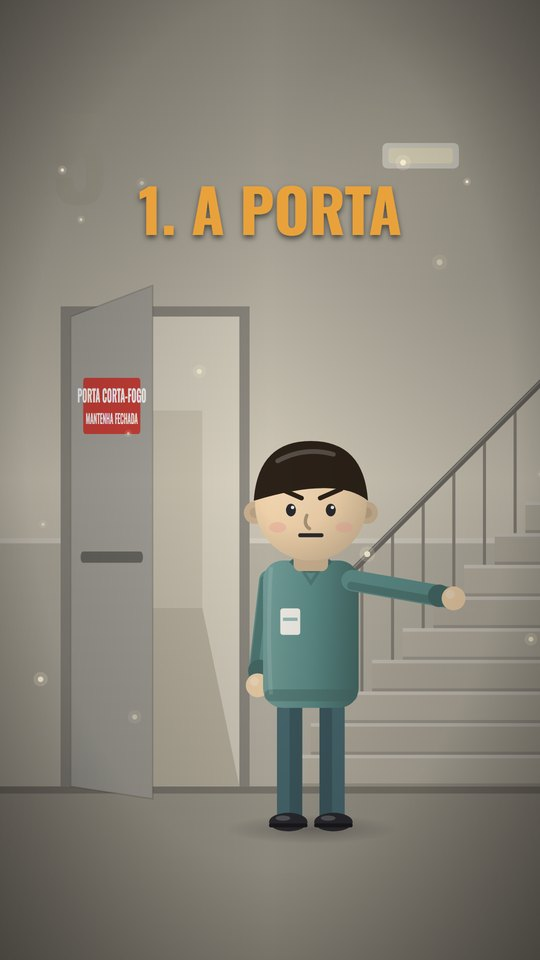
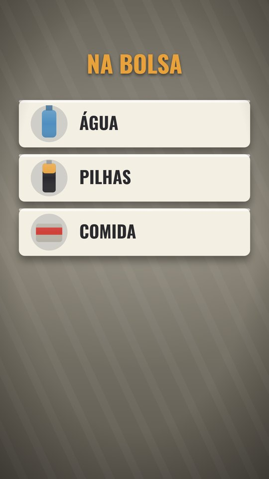
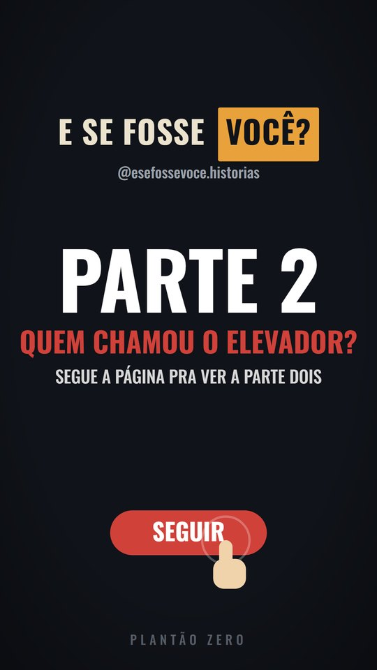

Sem saber desenhar, editar ou programar: você só escolhe a história e publica. Assista:
Acesso logo depois da compra · 7 dias de garantia
Com gancho, narração, legenda e música, prontos pra Reels, TikTok e Shorts. O exemplo é uma série de sobrevivência, mas a história é sua: mistério, curiosidades, lendas, histórias pra crianças, o que o seu público gosta. E quando ela pede um lugar novo, a IA desenha a cena pra você.






Aulas curtas, direto ao ponto. As regras de cada plataforma foram conferidas nas páginas oficiais em outubro de 2026.
O motor pronto que faz o episódio inteiro: roteirista, cenas, voz, legenda, som e render, num pedido só.
A instalação passo a passo, o molde do tema, os checklists e os pedidos prontos pra colar no Claude.
Um episódio completo pra você ver o resultado e testar um ajuste antes de fazer o seu.
pagamento único
É uma inteligência artificial, feita pela Anthropic. No curso, ela trabalha no seu computador: instala o sistema, escreve o roteiro e monta o vídeo, sempre pedindo a sua permissão antes. A assinatura do Claude é paga à parte.
Não. Você pede em português, e o Claude instala, escreve e monta. Os comandos aparecem na tela pra você saber o que está acontecendo, mas quem roda é ele, pedindo a sua permissão antes.
A assinatura do Claude é paga à parte, direto na Anthropic, e não está incluída no curso. Ela precisa incluir o Claude Code (planos Pro ou Max). Confira o preço atual no site do Claude.
A narração sai do Gemini, do Google, que tem uma cota grátis por dia. Na aula 2 você cria a chave, sem cartão.
Por enquanto, só no Windows. O sistema roda no computador, e o celular serve pra publicar.
Não. Música de banco grátis também pode ser reivindicada no YouTube. A aula 5 ensina a escolher faixa fora do Content ID.
O módulo 2 mostra os caminhos (o que o TikTok, o YouTube e o Facebook exigem pra pagar, publi, afiliado e produto próprio) com as regras de cada um. Ele não promete quanto você vai ganhar: isso depende da sua página, e ninguém pode garantir.
Não. O curso ensina a fazer os episódios e a publicar do jeito certo. O crescimento depende da sua história, da frequência e do público, e ninguém pode garantir isso.
Não. O exemplo do curso é uma série de sobrevivência, mas o tema é seu. O sistema já vem com cidade, praia, floresta, deserto, interiores e mais, e quando a sua história pede um lugar que ele ainda não tem, você pede e o Claude desenha a cena nova.
Sim. A história, os personagens e a série que você cria são seus. Só não copie a série de outra página: o curso ensina a criar a sua.
Logo depois da compra, você recebe o acesso à área de membros, com as aulas, o Sistema Operacional e o guia.